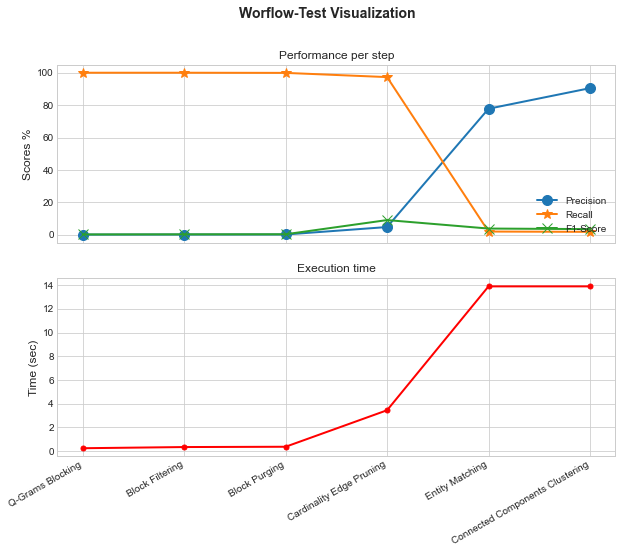
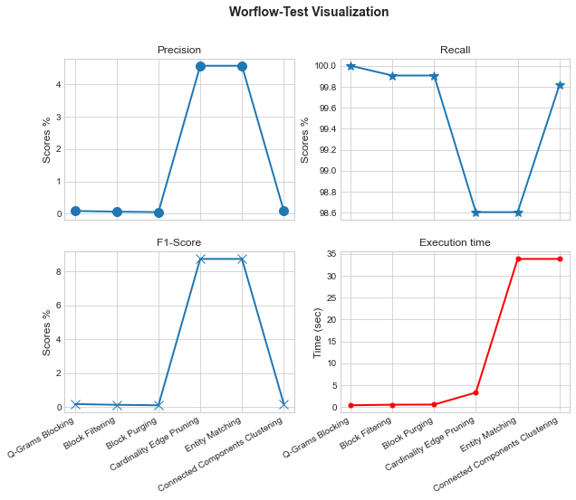
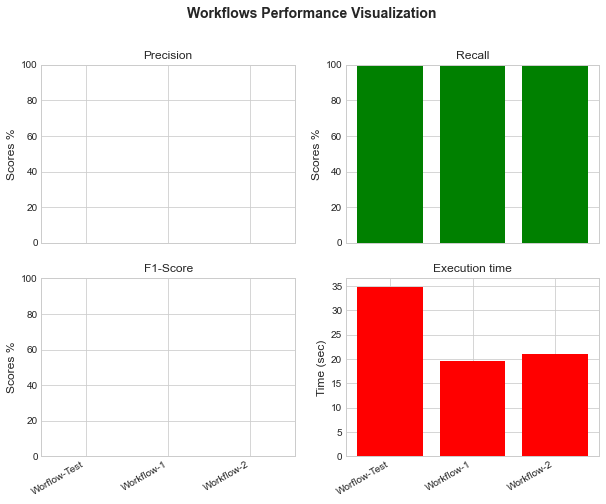

User-Friendly Workflow
Contents
User-Friendly Workflow#
In this notebook we present the a user-friendly approach in the well-known ABT-BUY dataset. This is a simple approach, specially developed for novice users in ER.
Instalation#
pyJedAI is an open-source library that can be installed from PyPI.
For more: pypi.org/project/pyjedai/
!pip install pyjedai -U
Requirement already satisfied: pyjedai in c:\users\nikol\anaconda3\envs\pyjedai391\lib\site-packages (0.0.4)
Requirement already satisfied: PyYAML>=6.0 in c:\users\nikol\anaconda3\envs\pyjedai391\lib\site-packages (from pyjedai) (6.0)
Requirement already satisfied: networkx>=2.3 in c:\users\nikol\anaconda3\envs\pyjedai391\lib\site-packages (from pyjedai) (2.8.4)
Requirement already satisfied: transformers>=4.21 in c:\users\nikol\anaconda3\envs\pyjedai391\lib\site-packages (from pyjedai) (4.21.3)
Requirement already satisfied: scipy>=1.7 in c:\users\nikol\anaconda3\envs\pyjedai391\lib\site-packages (from pyjedai) (1.8.1)
Requirement already satisfied: nltk>=3.7 in c:\users\nikol\anaconda3\envs\pyjedai391\lib\site-packages (from pyjedai) (3.7)
Requirement already satisfied: seaborn>=0.11 in c:\users\nikol\anaconda3\envs\pyjedai391\lib\site-packages (from pyjedai) (0.11.2)
Requirement already satisfied: numpy>=1.21 in c:\users\nikol\anaconda3\envs\pyjedai391\lib\site-packages (from pyjedai) (1.22.4)
Requirement already satisfied: faiss-cpu>=1.7 in c:\users\nikol\anaconda3\envs\pyjedai391\lib\site-packages (from pyjedai) (1.7.2)
Requirement already satisfied: matplotlib>=3.5.2 in c:\users\nikol\anaconda3\envs\pyjedai391\lib\site-packages (from pyjedai) (3.5.2)
Requirement already satisfied: gensim>=4.2.0 in c:\users\nikol\anaconda3\envs\pyjedai391\lib\site-packages (from pyjedai) (4.2.0)
Requirement already satisfied: pandocfilters>=1.5 in c:\users\nikol\anaconda3\envs\pyjedai391\lib\site-packages (from pyjedai) (1.5.0)
Requirement already satisfied: optuna>=3.0 in c:\users\nikol\anaconda3\envs\pyjedai391\lib\site-packages (from pyjedai) (3.0.1)
Requirement already satisfied: tomli in c:\users\nikol\anaconda3\envs\pyjedai391\lib\site-packages (from pyjedai) (2.0.1)
Requirement already satisfied: sentence-transformers>=2.2 in c:\users\nikol\anaconda3\envs\pyjedai391\lib\site-packages (from pyjedai) (2.2.2)
Requirement already satisfied: strsimpy>=0.2.1 in c:\users\nikol\anaconda3\envs\pyjedai391\lib\site-packages (from pyjedai) (0.2.1)
Requirement already satisfied: rdflib>=6.1.1 in c:\users\nikol\anaconda3\envs\pyjedai391\lib\site-packages (from pyjedai) (6.1.1)
Requirement already satisfied: matplotlib-inline>=0.1.3 in c:\users\nikol\anaconda3\envs\pyjedai391\lib\site-packages (from pyjedai) (0.1.6)
Requirement already satisfied: rdfpandas>=1.1.5 in c:\users\nikol\anaconda3\envs\pyjedai391\lib\site-packages (from pyjedai) (1.1.5)
Requirement already satisfied: tqdm>=4.64 in c:\users\nikol\anaconda3\envs\pyjedai391\lib\site-packages (from pyjedai) (4.64.0)
Requirement already satisfied: pandas>=0.25.3 in c:\users\nikol\anaconda3\envs\pyjedai391\lib\site-packages (from pyjedai) (1.4.2)
Requirement already satisfied: regex>=2022.6.2 in c:\users\nikol\anaconda3\envs\pyjedai391\lib\site-packages (from pyjedai) (2022.6.2)
Requirement already satisfied: strsim>=0.0.3 in c:\users\nikol\anaconda3\envs\pyjedai391\lib\site-packages (from pyjedai) (0.0.3)
Requirement already satisfied: pandas-profiling>=3.2 in c:\users\nikol\anaconda3\envs\pyjedai391\lib\site-packages (from pyjedai) (3.2.0)
Requirement already satisfied: Cython==0.29.28 in c:\users\nikol\anaconda3\envs\pyjedai391\lib\site-packages (from gensim>=4.2.0->pyjedai) (0.29.28)
Requirement already satisfied: smart-open>=1.8.1 in c:\users\nikol\anaconda3\envs\pyjedai391\lib\site-packages (from gensim>=4.2.0->pyjedai) (6.2.0)
Requirement already satisfied: pillow>=6.2.0 in c:\users\nikol\anaconda3\envs\pyjedai391\lib\site-packages (from matplotlib>=3.5.2->pyjedai) (9.2.0)
Requirement already satisfied: pyparsing>=2.2.1 in c:\users\nikol\anaconda3\envs\pyjedai391\lib\site-packages (from matplotlib>=3.5.2->pyjedai) (3.0.9)
Requirement already satisfied: cycler>=0.10 in c:\users\nikol\anaconda3\envs\pyjedai391\lib\site-packages (from matplotlib>=3.5.2->pyjedai) (0.11.0)
Requirement already satisfied: kiwisolver>=1.0.1 in c:\users\nikol\anaconda3\envs\pyjedai391\lib\site-packages (from matplotlib>=3.5.2->pyjedai) (1.4.4)
Requirement already satisfied: python-dateutil>=2.7 in c:\users\nikol\anaconda3\envs\pyjedai391\lib\site-packages (from matplotlib>=3.5.2->pyjedai) (2.8.2)
Requirement already satisfied: fonttools>=4.22.0 in c:\users\nikol\anaconda3\envs\pyjedai391\lib\site-packages (from matplotlib>=3.5.2->pyjedai) (4.37.3)
Requirement already satisfied: packaging>=20.0 in c:\users\nikol\anaconda3\envs\pyjedai391\lib\site-packages (from matplotlib>=3.5.2->pyjedai) (21.3)
Requirement already satisfied: traitlets in c:\users\nikol\anaconda3\envs\pyjedai391\lib\site-packages (from matplotlib-inline>=0.1.3->pyjedai) (5.4.0)
Requirement already satisfied: click in c:\users\nikol\anaconda3\envs\pyjedai391\lib\site-packages (from nltk>=3.7->pyjedai) (8.1.3)
Requirement already satisfied: joblib in c:\users\nikol\anaconda3\envs\pyjedai391\lib\site-packages (from nltk>=3.7->pyjedai) (1.1.0)
Requirement already satisfied: typing-extensions>=3.10.0.0 in c:\users\nikol\anaconda3\envs\pyjedai391\lib\site-packages (from optuna>=3.0->pyjedai) (4.3.0)
Requirement already satisfied: alembic in c:\users\nikol\anaconda3\envs\pyjedai391\lib\site-packages (from optuna>=3.0->pyjedai) (1.8.1)
Requirement already satisfied: cmaes>=0.8.2 in c:\users\nikol\anaconda3\envs\pyjedai391\lib\site-packages (from optuna>=3.0->pyjedai) (0.8.2)
Requirement already satisfied: sqlalchemy>=1.1.0 in c:\users\nikol\anaconda3\envs\pyjedai391\lib\site-packages (from optuna>=3.0->pyjedai) (1.4.41)
Requirement already satisfied: colorlog in c:\users\nikol\anaconda3\envs\pyjedai391\lib\site-packages (from optuna>=3.0->pyjedai) (6.7.0)
Requirement already satisfied: cliff in c:\users\nikol\anaconda3\envs\pyjedai391\lib\site-packages (from optuna>=3.0->pyjedai) (4.0.0)
Requirement already satisfied: pytz>=2020.1 in c:\users\nikol\anaconda3\envs\pyjedai391\lib\site-packages (from pandas>=0.25.3->pyjedai) (2022.2.1)
Requirement already satisfied: pydantic>=1.8.1 in c:\users\nikol\anaconda3\envs\pyjedai391\lib\site-packages (from pandas-profiling>=3.2->pyjedai) (1.10.2)
Requirement already satisfied: missingno>=0.4.2 in c:\users\nikol\anaconda3\envs\pyjedai391\lib\site-packages (from pandas-profiling>=3.2->pyjedai) (0.5.1)
Requirement already satisfied: phik>=0.11.1 in c:\users\nikol\anaconda3\envs\pyjedai391\lib\site-packages (from pandas-profiling>=3.2->pyjedai) (0.12.2)
Requirement already satisfied: tangled-up-in-unicode==0.2.0 in c:\users\nikol\anaconda3\envs\pyjedai391\lib\site-packages (from pandas-profiling>=3.2->pyjedai) (0.2.0)
Requirement already satisfied: requests>=2.24.0 in c:\users\nikol\anaconda3\envs\pyjedai391\lib\site-packages (from pandas-profiling>=3.2->pyjedai) (2.28.1)
Requirement already satisfied: htmlmin>=0.1.12 in c:\users\nikol\anaconda3\envs\pyjedai391\lib\site-packages (from pandas-profiling>=3.2->pyjedai) (0.1.12)
Requirement already satisfied: visions[type_image_path]==0.7.4 in c:\users\nikol\anaconda3\envs\pyjedai391\lib\site-packages (from pandas-profiling>=3.2->pyjedai) (0.7.4)
Requirement already satisfied: multimethod>=1.4 in c:\users\nikol\anaconda3\envs\pyjedai391\lib\site-packages (from pandas-profiling>=3.2->pyjedai) (1.9)
Requirement already satisfied: markupsafe~=2.1.1 in c:\users\nikol\anaconda3\envs\pyjedai391\lib\site-packages (from pandas-profiling>=3.2->pyjedai) (2.1.1)
Requirement already satisfied: jinja2>=2.11.1 in c:\users\nikol\anaconda3\envs\pyjedai391\lib\site-packages (from pandas-profiling>=3.2->pyjedai) (3.1.2)
Requirement already satisfied: attrs>=19.3.0 in c:\users\nikol\anaconda3\envs\pyjedai391\lib\site-packages (from visions[type_image_path]==0.7.4->pandas-profiling>=3.2->pyjedai) (21.4.0)
Requirement already satisfied: imagehash in c:\users\nikol\anaconda3\envs\pyjedai391\lib\site-packages (from visions[type_image_path]==0.7.4->pandas-profiling>=3.2->pyjedai) (4.3.0)
Requirement already satisfied: isodate in c:\users\nikol\anaconda3\envs\pyjedai391\lib\site-packages (from rdflib>=6.1.1->pyjedai) (0.6.1)
Requirement already satisfied: setuptools in c:\users\nikol\anaconda3\envs\pyjedai391\lib\site-packages (from rdflib>=6.1.1->pyjedai) (63.4.1)
Requirement already satisfied: huggingface-hub>=0.4.0 in c:\users\nikol\anaconda3\envs\pyjedai391\lib\site-packages (from sentence-transformers>=2.2->pyjedai) (0.9.1)
Requirement already satisfied: torch>=1.6.0 in c:\users\nikol\anaconda3\envs\pyjedai391\lib\site-packages (from sentence-transformers>=2.2->pyjedai) (1.12.1)
Requirement already satisfied: scikit-learn in c:\users\nikol\anaconda3\envs\pyjedai391\lib\site-packages (from sentence-transformers>=2.2->pyjedai) (1.1.2)
Requirement already satisfied: sentencepiece in c:\users\nikol\anaconda3\envs\pyjedai391\lib\site-packages (from sentence-transformers>=2.2->pyjedai) (0.1.97)
Requirement already satisfied: torchvision in c:\users\nikol\anaconda3\envs\pyjedai391\lib\site-packages (from sentence-transformers>=2.2->pyjedai) (0.13.1)
Requirement already satisfied: colorama in c:\users\nikol\anaconda3\envs\pyjedai391\lib\site-packages (from tqdm>=4.64->pyjedai) (0.4.5)
Requirement already satisfied: tokenizers!=0.11.3,<0.13,>=0.11.1 in c:\users\nikol\anaconda3\envs\pyjedai391\lib\site-packages (from transformers>=4.21->pyjedai) (0.12.1)
!pip show pyjedai
Requirement already satisfied: filelock in c:\users\nikol\anaconda3\envs\pyjedai391\lib\site-packages (from transformers>=4.21->pyjedai) (3.8.0)
Requirement already satisfied: six>=1.5 in c:\users\nikol\anaconda3\envs\pyjedai391\lib\site-packages (from python-dateutil>=2.7->matplotlib>=3.5.2->pyjedai) (1.16.0)
Requirement already satisfied: certifi>=2017.4.17 in c:\users\nikol\anaconda3\envs\pyjedai391\lib\site-packages (from requests>=2.24.0->pandas-profiling>=3.2->pyjedai) (2022.9.24)
Requirement already satisfied: idna<4,>=2.5 in c:\users\nikol\anaconda3\envs\pyjedai391\lib\site-packages (from requests>=2.24.0->pandas-profiling>=3.2->pyjedai) (3.4)
Requirement already satisfied: urllib3<1.27,>=1.21.1 in c:\users\nikol\anaconda3\envs\pyjedai391\lib\site-packages (from requests>=2.24.0->pandas-profiling>=3.2->pyjedai) (1.26.12)
Requirement already satisfied: charset-normalizer<3,>=2 in c:\users\nikol\anaconda3\envs\pyjedai391\lib\site-packages (from requests>=2.24.0->pandas-profiling>=3.2->pyjedai) (2.1.1)
Requirement already satisfied: greenlet!=0.4.17 in c:\users\nikol\anaconda3\envs\pyjedai391\lib\site-packages (from sqlalchemy>=1.1.0->optuna>=3.0->pyjedai) (1.1.3)
Requirement already satisfied: Mako in c:\users\nikol\anaconda3\envs\pyjedai391\lib\site-packages (from alembic->optuna>=3.0->pyjedai) (1.2.2)
Requirement already satisfied: PrettyTable>=0.7.2 in c:\users\nikol\anaconda3\envs\pyjedai391\lib\site-packages (from cliff->optuna>=3.0->pyjedai) (3.4.1)
Requirement already satisfied: cmd2>=1.0.0 in c:\users\nikol\anaconda3\envs\pyjedai391\lib\site-packages (from cliff->optuna>=3.0->pyjedai) (2.4.2)
Requirement already satisfied: autopage>=0.4.0 in c:\users\nikol\anaconda3\envs\pyjedai391\lib\site-packages (from cliff->optuna>=3.0->pyjedai) (0.5.1)
Requirement already satisfied: stevedore>=2.0.1 in c:\users\nikol\anaconda3\envs\pyjedai391\lib\site-packages (from cliff->optuna>=3.0->pyjedai) (4.0.0)
Requirement already satisfied: importlib-metadata>=4.4 in c:\users\nikol\anaconda3\envs\pyjedai391\lib\site-packages (from cliff->optuna>=3.0->pyjedai) (4.12.0)
Requirement already satisfied: threadpoolctl>=2.0.0 in c:\users\nikol\anaconda3\envs\pyjedai391\lib\site-packages (from scikit-learn->sentence-transformers>=2.2->pyjedai) (3.1.0)
Requirement already satisfied: wcwidth>=0.1.7 in c:\users\nikol\anaconda3\envs\pyjedai391\lib\site-packages (from cmd2>=1.0.0->cliff->optuna>=3.0->pyjedai) (0.2.5)
Requirement already satisfied: pyperclip>=1.6 in c:\users\nikol\anaconda3\envs\pyjedai391\lib\site-packages (from cmd2>=1.0.0->cliff->optuna>=3.0->pyjedai) (1.8.2)
Requirement already satisfied: pyreadline3 in c:\users\nikol\anaconda3\envs\pyjedai391\lib\site-packages (from cmd2>=1.0.0->cliff->optuna>=3.0->pyjedai) (3.4.1)
Requirement already satisfied: zipp>=0.5 in c:\users\nikol\anaconda3\envs\pyjedai391\lib\site-packages (from importlib-metadata>=4.4->cliff->optuna>=3.0->pyjedai) (3.8.1)
Requirement already satisfied: pbr!=2.1.0,>=2.0.0 in c:\users\nikol\anaconda3\envs\pyjedai391\lib\site-packages (from stevedore>=2.0.1->cliff->optuna>=3.0->pyjedai) (5.10.0)
Requirement already satisfied: PyWavelets in c:\users\nikol\anaconda3\envs\pyjedai391\lib\site-packages (from imagehash->visions[type_image_path]==0.7.4->pandas-profiling>=3.2->pyjedai) (1.4.1)
Name: pyjedai
Version: 0.0.4
Summary: An open-source library that builds powerful end-to-end Entity Resolution workflows.
Home-page:
Author:
Author-email: Konstantinos Nikoletos <nikoletos.kon@gmail.com>, George Papadakis <gpapadis84@gmail.com>
License: Apache Software License 2.0
Location: c:\users\nikol\anaconda3\envs\pyjedai391\lib\site-packages
Requires: faiss-cpu, gensim, matplotlib, matplotlib-inline, networkx, nltk, numpy, optuna, pandas, pandas-profiling, pandocfilters, PyYAML, rdflib, rdfpandas, regex, scipy, seaborn, sentence-transformers, strsim, strsimpy, tomli, tqdm, transformers
Required-by:
Imports
import os
import sys
import pandas as pd
Data Reading#
from pyjedai.datamodel import Data
data = Data(
dataset_1=pd.read_csv("./../data/D2/abt.csv", sep='|', engine='python', na_filter=False).astype(str),
attributes_1=['id','name','description'],
id_column_name_1='id',
dataset_2=pd.read_csv("./../data/D2/buy.csv", sep='|', engine='python', na_filter=False).astype(str),
attributes_2=['id','name','description'],
id_column_name_2='id',
ground_truth=pd.read_csv("./../data/D2/gt.csv", sep='|', engine='python'),
)
data.process()
WorkFlow#
from pyjedai.workflow import WorkFlow, compare_workflows
from pyjedai.block_building import StandardBlocking, QGramsBlocking, ExtendedQGramsBlocking, SuffixArraysBlocking, ExtendedSuffixArraysBlocking
from pyjedai.block_cleaning import BlockFiltering, BlockPurging
from pyjedai.comparison_cleaning import WeightedEdgePruning, WeightedNodePruning, CardinalityEdgePruning, CardinalityNodePruning, BLAST, ReciprocalCardinalityNodePruning, ReciprocalWeightedNodePruning, ComparisonPropagation
from pyjedai.matching import EntityMatching
from pyjedai.clustering import ConnectedComponentsClustering
w = WorkFlow(
block_building = dict(
method=QGramsBlocking,
params=dict(qgrams=3),
attributes_1=['name'],
attributes_2=['name']
),
block_cleaning = [
dict(
method=BlockFiltering,
params=dict(ratio=0.8)
),
dict(
method=BlockPurging,
params=dict(smoothing_factor=1.025)
)
],
comparison_cleaning = dict(method=CardinalityEdgePruning),
entity_matching = dict(
method=EntityMatching,
metric='sorensen_dice',
similarity_threshold=0.5,
attributes = ['description', 'name']
),
clustering = dict(method=ConnectedComponentsClustering),
name="Worflow-Test"
)
w.run(data, verbose=True)
# Q-Grams Blocking Evaluation
---
Method name: Q-Grams Blocking
Parameters:
Q-Gramms: 3
Runtime: 0.1934 seconds
Scores:
Precision: 0.08%
Recall: 100.00%
F1-score: 0.17%
Classification report:
True positives: 1076
False positives: 1282428
True negatives: -124652
False negatives: 0
Total comparisons: 1283504
---
# Block Filtering Evaluation
---
Method name: Block Filtering
Parameters:
Ratio: 0.8
Runtime: 0.0693 seconds
Scores:
Precision: 0.06%
Recall: 99.91%
F1-score: 0.12%
Classification report:
True positives: 1075
False positives: 1757290
True negatives: -599515
False negatives: 1
Total comparisons: 1758365
---
# Block Purging Evaluation
---
Method name: Block Purging
Parameters:
Smoothing factor: 1.025
Max Comparisons per Block: 9191.0
Runtime: 0.0238 seconds
Scores:
Precision: 0.05%
Recall: 99.91%
F1-score: 0.10%
Classification report:
True positives: 1075
False positives: 2232151
True negatives: -1074376
False negatives: 1
Total comparisons: 2233226
---
# Cardinality Edge Pruning Evaluation
---
Method name: Cardinality Edge Pruning
Parameters:
Node centric: False
Weighting scheme: JS
Runtime: 1.7882 seconds
Scores:
Precision: 4.58%
Recall: 98.61%
F1-score: 8.75%
Classification report:
True positives: 1061
False positives: 22121
True negatives: 1135640
False negatives: 15
Total comparisons: 23182
---
# Entity Matching Evaluation
---
Method name: Entity Matching
Parameters:
Metric: sorensen_dice
Embeddings: None
Attributes: None
Similarity threshold: None
Runtime: 15.2584 seconds
Scores:
Precision: 4.58%
Recall: 98.61%
F1-score: 8.75%
Classification report:
True positives: 1061
False positives: 22121
True negatives: 1135640
False negatives: 15
Total comparisons: 23182
---
# Connected Components Clustering Evaluation
---
Method name: Connected Components Clustering
Parameters:
Runtime: 0.0075 seconds
Scores:
Precision: 0.09%
Recall: 99.81%
F1-score: 0.19%
Classification report:
True positives: 1074
False positives: 1152097
True negatives: 5677
False negatives: 2
Total comparisons: 1153171
---
w.to_df()
| Algorithm | F1 | Recall | Precision | Runtime (sec) | Params | |
|---|---|---|---|---|---|---|
| 0 | Q-Grams Blocking | 0.167526 | 100.000000 | 0.083833 | 0.193411 | {'Q-Gramms': 3} |
| 1 | Block Filtering | 0.122198 | 99.907063 | 0.061136 | 0.069316 | {'Ratio': 0.8} |
| 2 | Block Purging | 0.096227 | 99.907063 | 0.048137 | 0.023776 | {'Smoothing factor': 1.025, 'Max Comparisons p... |
| 3 | Cardinality Edge Pruning | 8.747630 | 98.605948 | 4.576827 | 1.788167 | {'Node centric': False, 'Weighting scheme': 'JS'} |
| 4 | Entity Matching | 8.747630 | 98.605948 | 4.576827 | 15.258426 | {'Metric': 'sorensen_dice', 'Embeddings': None... |
| 5 | Connected Components Clustering | 0.186095 | 99.814126 | 0.093134 | 0.007531 | {} |
w.visualize()

w.visualize(separate=True)

Multiple workflows - Comparison#
w1 = WorkFlow(
block_building = dict(
method=QGramsBlocking,
params=dict(qgrams=4),
attributes_1=['name'],
attributes_2=['name']
),
block_cleaning = [
dict(
method=BlockFiltering,
params=dict(ratio=0.6)
),
dict(
method=BlockPurging,
params=dict(smoothing_factor=1.025)
)
],
comparison_cleaning = dict(method=CardinalityEdgePruning),
entity_matching = dict(
method=EntityMatching,
metric='sorensen_dice',
similarity_threshold=0.5,
attributes = ['description', 'name']
),
clustering = dict(method=ConnectedComponentsClustering)
)
w1.run(data, verbose=False, workflow_tqdm_enable=True)
w2 = WorkFlow(
block_building = dict(
method=QGramsBlocking,
params=dict(qgrams=4),
attributes_1=['name'],
attributes_2=['name']
),
block_cleaning = [
dict(
method=BlockFiltering,
params=dict(ratio=0.6)
),
dict(
method=BlockPurging,
params=dict(smoothing_factor=1.025)
)
],
comparison_cleaning = dict(method=CardinalityEdgePruning),
entity_matching = dict(
method=EntityMatching,
metric='sorensen_dice',
similarity_threshold=0.6,
attributes = ['description']
),
clustering = dict(method=ConnectedComponentsClustering)
)
w2.run(data, verbose=False, workflow_tqdm_enable=True)
compare_workflows([w, w1, w2], with_visualization=True)

| Name | F1 | Recall | Precision | Runtime (sec) | |
|---|---|---|---|---|---|
| 0 | Worflow-Test | 0.186095 | 99.814126 | 0.093134 | 17.832960 |
| 1 | Workflow-1 | 0.193095 | 100.000000 | 0.096641 | 9.660497 |
| 2 | Workflow-2 | 0.193095 | 100.000000 | 0.096641 | 9.448065 |